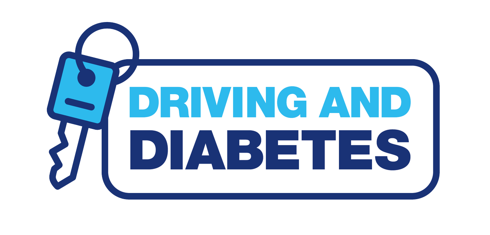
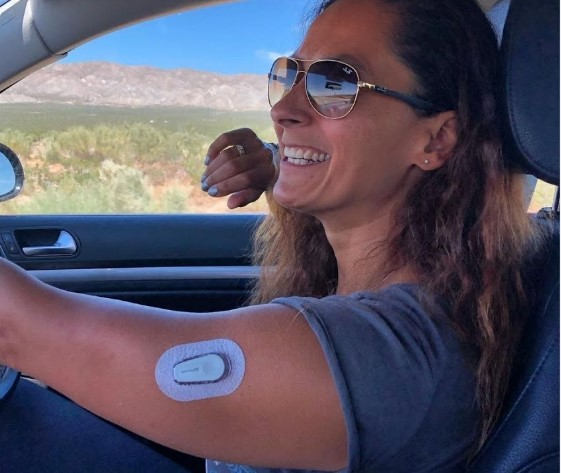
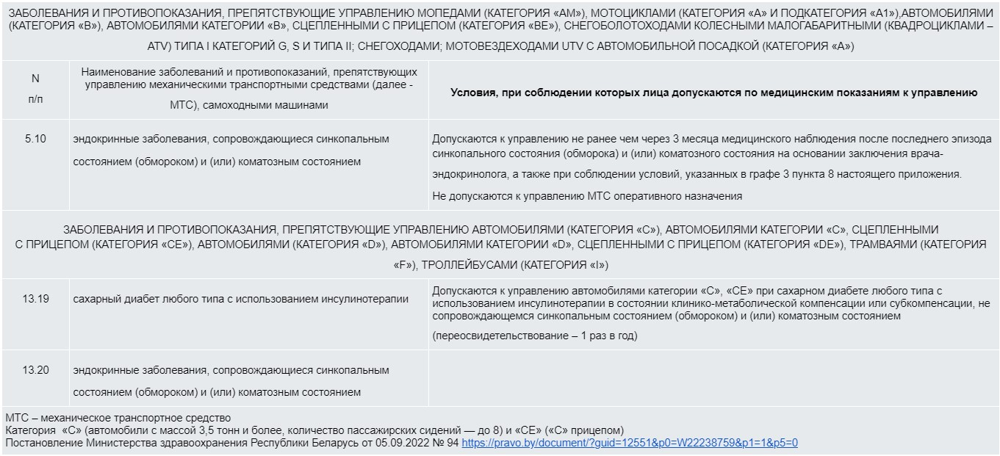

Вождение и диабет
Сам по себе диагноз «Сахарный диабет» не является противопоказанием к любительскому вождению автомобиля. Но ограничения, конечно, могут возникнуть при развитии поздних осложнений: ретинопатии, приводящей к снижению или потере зрения, периферической полинейропатии – поражении нервных волокон ног с потерей чувствительности (так, по легенде, был диагностирован СД у личного водителя Л. И. Брежнева: он перестал чувствовать педали), при развитии синдрома диабетической стопы, когда для заживления язвенного дефекта необходимо длительное время «разгружать» ногу. Другая ситуация, которая может послужить препятствием для вождения автомобиля – частые гипогликемии, в том числе необъяснимые тяжелые гипогликемии (гипогликемии с нарушением сознания) или такое осложнение СД, как нераспознавание гипогликемии. В этом случае вождение становится крайне опасным как для самого водителя, так и для других участников дорожного движения.

1. Чтобы быть уверенным в себе за рулем, стоит соблюдать ряд несложных правил:
Проверьте уровень глюкозы крови перед началом движения. Он должен быть не ниже 5 ммоль/л. Даже если Вы чувствуете себя хорошо при уровне глюкозы крови ниже 4 ммоль/л, Ваши водительские качества снижены.
Не стоит вести машину, если был длительный перерыв в приеме пищи.
Всегда держите при себе легкоусвояемые углеводы, то есть те, которые помогут быстро справиться с гипогликемией – сахар, сок, лимонад, декстроза. Положите дополнительное количество в «бардачок» или карман, пусть лежат там «на всякий случай».
Будьте особенно аккуратны, если в данный момент риск развития гипогликемии повышен. Например, Вы едете домой с тренировки по футболу или с танцевальной репетиции. Помните, после физической нагрузки гипогликемия может наступить и через несколько часов.
Воздержитесь от управления автомобилем, если у Вас изменился режим инсулинотерапии или Вы стали пользоваться другими видами инсулина. Также стоит повременить, если Вы начали применять инсулиновую помпу или, наоборот, перешли обратно на многократные инъекции инсулина. Про срок ограничения сказать трудно, все индивидуально. При отсутствии гипогликемий не по самочувствию, а по глюкометру, можно возобновить вождение автомобиля.
Если Вы почувствовали симптомы гипогликемии во время движения, у Вас резко «затуманилось» зрение, постарайтесь как можно скорее съехать к обочине дороги, если это невозможно, остановитесь, включив аварийный сигнал. Продолжайте движение только после нормализации самочувствия!

2. В разных странах мира отношение к этому вопросу расходится. Есть страны, в которых людям с сахарным диабетом категорически запрещено вождение даже легкового автомобиля для своих личных целей. В других – имеются ограничения, например, нельзя управлять грузовыми автомобилями, весом более 3500 кг или легковым автомобилем по найму (то есть не в личных целях). В третьих – ограничений нет.
3. Одним из тех, кто успешно управляет и диабетом, и автомобилем, является Чарли Кимбалл (Charlie Kimball). С 9 лет он участвует в гонках на картах, в 11 он стал первым американцем, выигравшим в Формуле-3. В 13 лет у него был выявлен сахарный диабет 1 типа.

Но это вовсе не помешало ему продолжить свою карьеру автогонщика!
Он активно участвует в гонках. Во время соревнования и тренировок он использует систему непрерывного мониторинга уровня глюкозы, инсулиновую помпу.
А также с помощью специальной трубки у него всегда есть доступ к быстрым углеводам – соку.
Вдохновляющий пример, не правда ли?
Когда вы садитесь за руль, помните: каждый водитель несет ответственность не только за себя!
От неправильных действий водителя могут пострадать и другие участники дорожного движения: ребенок, переходивший дорогу по «зебре» без светофора; неуверенный начинающий водитель другого авто; тот, кто управляет автомобилем, движущемся по встречной полосе или близкий человек, сидящий рядом на пассажирском сидении.
От Вашего выбора – измерить уровень глюкозы крови или нет, грамотно оценить свое состояние или положится на удачу – зависит безопасность дорожного движения.

Диабет и вождение
(источник: Школа диабета, Россия)
Сахарный диабет 1 типа и вождение автомобиля
(источник: сайт “Правило15)
Буклет "Diabetes and Driving", англ язык, Австралия. Скачать
Driving with diabetes. Англ язык, Австралия
Driving and diabetes. Англ язык, Великобритания
5 Tips to Remember When You Get Behind the Wheel with Diabetes. Англ язык, Израиль